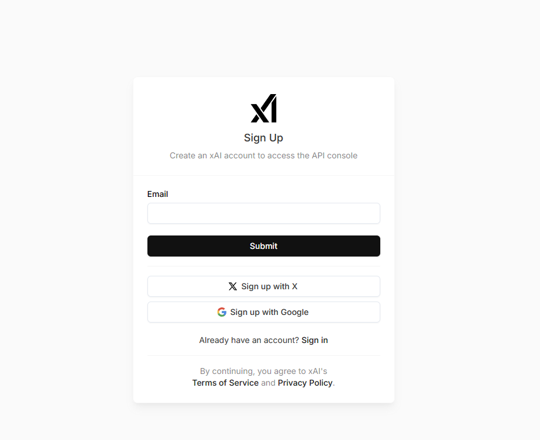

入口与注册
点击此处xAI进入注册入口
可以使用QQ邮箱进行注册，如果有X账号或者谷歌账号直接登入即可。
如果选择注册，那么会跳出邮箱认证界面。

在注册的邮箱内认证即可。

勾选隐私协议与年龄政策

API获取
选择创建API key

创建后建议创建一个文本文档复制过去(请注意，该API只显示一次且建议不分享给任何人，如果分享给其他人，别人将可以使用你的API额度)

如果API泄漏或者忘记，可以前往左侧菜单栏第二位创建新的API

填写API名字后默认下一步即可。

回到主页后可以查看额度使用情况。

一些问题
此网站需要科学上网使用，默认可能无法打开
具体调用
可以使用任意一个支持自定义API功能的chat软件，这里不过多推荐。